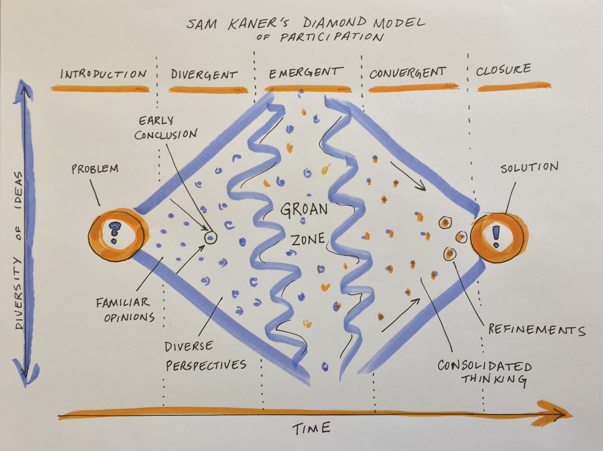

Supporting Divergent, Emergent, and Convergent Thinking
Overview
As many course participants will have discovered by now, the process of deciding on, refining, and choosing a path forward for data analysis will involve many differing opinions and perspectives. To work effectively as a group, you will need to elicit a broad range of ideas and then combine and focus them. This can be unfamiliar territory for researchers who have mainly pursued individual projects. While the particulars of each project are different, the patterns are often similar and being familiar with a few approaches for eliciting the best from yourself and colleagues can speed the process and improve the experience for all involved.
Below you will find support for your group as you move through both exciting, and sometimes uncomfortable, stages of collaborative, participatory decision-making - from divergent to emergent and finally convergent thinking.
Learning Objectives
After completing this module you will be able to:
- Recognize the stages of a participatory decision making process and the type of thinking required for each stage
- Identify the value of and potential obstacles to emergent thinking in the “groan zone”
- Understand the diamond model of participatory decision making as a framework for group process design
- Develop strategies to support participation, innovative thinking, integration, and convergence / decision making in a team setting
Preparation
None required.
Networking Session
Bala Chaudhary is a soil ecologist specializing in plant-soil-microbial interactions and mycorrhizal symbioses. Research in her lab examines ecosystem-scale questions in mycorrhizal ecology along four main themes: microbial dispersal at the macrosystems scale, trait-based mycorrhizal ecology, synthesis in ecology, and microbial mediation of global change solutions. She uses trait-based approaches to develop predictive frameworks for mycorrhizal dispersal, community assembly, and biogeography, and employs complimentary approaches of macroecological field work, controlled lab experiments, and data synthesis to study multi-scale questions in ecology. Her work spans dozens of ecosystem types and has applications in global change solutions including climate mitigation and adaptation, soil conservation, ecosystem restoration, and sustainable agriculture. She also conducts research on ways to broaden scientific participation and promote racial and ethnic diversity, equity, and inclusion in STEM.
Module Content
At the beginning of a collaborative process, the most important initial outcome is getting convergence or group alignment on a set of shared goals and objectives and a plan for how to achieve them. If your team process is effective, this plan will be an inclusive solution – one that works for everyone in the group. Achieving this shared vision can be more difficult than one might expect. While you may expect that participants have already agreed to the vision in joining the group, agreement does not always equate to alignment. This module focuses on tools and resources to help your group navigate to convergent, inclusive solutions that everyone on the team can align around.
Embracing divergent thinking
The first stage of group decision making is divergent thinking (Kaner et al. 2014). Confronted with a new, complex topic, the group will gradually move from the safe territory of familiar opinions into sharing their diverse perspectives and exploring new ideas. This can feel like the group process is devolving away from what was assumed to be shared agreement, but it is actually a critical part of the collaborative process.

When a diverse group comes together to work on a complex problem, their views are likely to diverge widely across many dimensions from problem definition to priorities to methods/approaches to the definition of success. But you can tap that divergent thinking to generate entirely new ideas and options that emerge through the group’s productive struggle for mutual understanding.
While your working group is in the divergent thinking stage, it’s critical to foster dialogue to surface different perspectives. Examine hidden assumptions. Create room for disagreement and questioning. Amplify diverse perspectives - and particularly, voices from the edge (e.g., junior members, new collaborators, people from different disciplines, non-scientists who may be affected by the research) - in order to expand the range of possibilities. Mirror and validate what you hear. Invite people who are good at bridging across disciplinary or other differences to help translate and build shared understanding of methods and ways of thinking. Suspend judgment and encourage full participation.
Beware of the most common pitfall at this stage, which is to converge too quickly on an early conclusion, staying in the safe space of familiar opinions and status quo solutions. You can prepare for this stage and help to avoid that pitfall by reviewing prior work and synthesizing data and knowledge gaps, promising approaches, and critical questions. Your team can use that synthesis of the current state of the science as a jumping off point.
Making it through the groan zone
It’s natural for groups to go through a period of confusion and frustration as they struggle to integrate their diverse perspectives into a shared framework of understanding (Kaner et al. 2014). The goal is to get the group across this no man’s land between divergent thinking and convergence known as the “groan zone.” In the groan zone, the group leader or facilitator’s job is to keep the group from getting frustrated and shutting down.
While the groan zone can be challenging, it can also be an extremely fruitful and creative stage. Here in the messy middle of a group process, an open and flexible mindset and a process that invites participants to engage in emergent thinking can enable true innovation. Emergent thinking builds upon ideas generated in the divergent thinking stage, recombining or adapting them in novel ways. It seeks to identify patterns and make meaning in the face of complexity and uncertainty. Done well, emergent thinking enables a group to adapt, sense opportunities, and generate new and exciting ideas.
A variety of factors and dynamics can impede emergent thinking and make the groan zone especially challenging. What have you observed?
- Disciplinary differences in epistemology, vocabulary, and methods that impede understanding
- Analysis paralysis - getting lost in the weeds of endless analysis and detail
- Polarization - opposite camps anchored in
- Power dynamics that squelch creative contributions from the “edges”
- Avoidance of a deeper issue impeding collaboration (e.g. lack of trust)
- Turf wars, competition
- Risk aversion, perception management, fear of failure / getting it wrong
- Confirmation bias and resistance to ideas that challenge group identity and beliefs
Some useful techniques for navigating the groan zone and fostering emergent thinking include:
- Cultivating presence and patience
- Active listening
- Building shared understanding via translation (e.g. across disciplines), metacognition (thinking about how you are thinking), and inquiry
- Exploring new data, models, and ways of presenting information
- Creating categories to reveal structure and allow sorting and prioritization of ideas
- Combining or recombining ideas or methods to yield new approaches
- Working together to separate facts from opinions
- Carefully examining language, e.g. by looking word by word at a key statement or question that is being debated and asking what questions each word raises
- Capturing side issues in writing and reserving time to revisit these – taking the tangents seriously is a critical part of letting participants know you value their contributions
- Examining how proposed ideas might affect each individual in the group
- Honoring objections to the process and asking for suggestions
- Addressing power imbalances and elevating voices from the “edge”
If you find the conversation getting off track or the dynamics becoming difficult, useful techniques that allow you to remain committed to being supportive and respectful of all group members (including ones you might experience as “difficult”) include:
- Reminding individuals of the larger purpose of the group and reconnecting them to their own personal reasons for caring about and working on the issue, e.g. by inviting them to take a moment to reflect or to restate what success looks like
- Focusing on common ground and areas of potential alignment
- Inviting constructive opposition - ask the critic to say what they can support about a given proposal and what they would like to see changed or discussed further
- Switching the participation format (e.g., going to breakout groups, brainstorming, a go-around, or individual writing)
- Taking a break
- Stepping out of the content and addressing the process
- Educating members about group dynamics and asking them to reflect on how they are showing up
- Encouraging more people to participate
- Reframing the discussion, e.g. by surfacing underlying issues, and/or focusing on concrete actions that the group can take to resolve the conflict
Don’t get discouraged by the groan zone. Misunderstanding and miscommunication are normal parts of the process of collaboration. And even more importantly, “the act of working through these misunderstandings is what builds the foundation for sustainable agreements [and]… meaningful collaboration” (Kaner et al. 2014).
Getting to convergence
Once the group has a strong foundation of shared understanding, things often start to click into place and feel easier and faster as you enter the zone of convergent thinking. At this point, the group is ready to devise inclusive solutions, weigh alternatives and make decisions. As the group leader your role is to help the group devise specific proposals, evaluate and decide among them, refine and synthesize into an overall approach, and lay out a concrete plan. The risk at this stage is that the group never converges on a clear decision or plan, leading the group to spin its wheels in the future.
Techniques that are useful in this phase include:
- Pulling up concrete examples for inspiration
- Inviting concrete, written proposals
- Clarifying selection criteria and evaluating proposals against them
- Combining the best elements of multiple ideas to support more innovative, inclusive solutions
- Deciding what ideas to pursue and which to keep on the back burner in case the team needs to adapt
- Defining steps and milestones, planning the work flow, and assigning roles and responsibilities
While the big work of the initial stage of a synthesis science project is getting to convergence on the overall work plan, you should expect that the group may go through the process of divergence and convergence again at multiple points in the process as you dive into the work and uncover new challenges. But the shared understanding and social rapport that come from successfully struggling together early on will allow the group to more easily and rapidly develop and implement new solutions in subsequent meetings.
Tools to support the thinking you need
(D=divergent, E=emergent, C=convergent)
| Microstructure | Stage | Purpose | How It Works | Tips & Traps |
|---|---|---|---|---|
| Brainwriting or brainstorming | D | Surface and elaborate ideas | Brainstorm ideas in a google doc or virtual whiteboard (or on index cards or sticky notes in person); read and add to each other’s ideas; discuss | Follow up with affinity mapping as you move into emergent thinking |
| Rotating Stations | D | Spread good ideas and make informal connections | Set up stations with experts or innovators who can present information and engage discussion; group members circulate to learn, ask questions, or provide feedback | Keep the overall session short so that it’s not too fatiguing for presenters who will have to repeat their spiel many times |
| User Experience Fishbowl (a riff on panel discussion) | DE | Draw out and contrast different perspectives from experts or interested parties | Experts with direct experience of the challenge at hand are invited to engage each other in conversation at the center of a circle; the rest of the group are audience to their conversation; audience and facilitator can suggest things for them to discuss | Avoid falling back on traditional formats where panelists talk to the audience rather than each other - the power of the fishbowl is the deep way in which the experts can engage each other |
| Horizon scanning / futures thinking | DE | Detect emerging trends, issues, or research opportunities | Define your scope; consult outside sources of data and expertise or brainstorm within the group to identify emerging trends, events, and weak signals of future change that may affect the question / topic you have defined | Set a timeframe that’s far enough out to encompass important uncertainties but not so far that forecasting becomes overly speculative |
| Affinity Map (clustering) | E | Surface ideas, detect patterns, and analyze | Brainstorm ideas using sticky notes on a wall or virtual whiteboard; cluster into categories | Follow up with prioritization of ideas within clusters as you move into convergent thinking |
| Conceptual models | E | Build a shared representation of the system | Co-develop a figure or diagram that encapsulates your collective understanding of the focal problem or system | Consider mind maps, flow charts, system diagrams; Consider having several small groups attempt this in parallel and compare results |
| World Cafe conversations | E | Engage everyone in making sense of profound challenges | Ask for a volunteer to host each table; use a talking object; Go-around 1: share what you are thinking, feeling, or doing about the theme or topic; Go-around 2: share your thoughts and feelings after having listened to others; Open conversation; Go-around 4: “takeaways” | Start with a clear question or prompt for discussion; Share the agreements and ask hosts to gently facilitate adherence |
| What, So What, Now What | ED | Make sense of past progress or experiences and decide on future actions | What - As a group, compile the facts and observations relevant to the context; So What - Reflect on the facts and their implications, identify patterns, generate hypotheses; Now What - Draw conclusions - What actions make sense? | Be firm in calling out opinions being passed off as facts in the What stage. Stick to what is observable. |
| Polling | EC | Rank alternatives | Decide how many votes per person; In person - use sticky dots; Virtually - use +1s in a google doc or a digital polling tool (e.g., Zoom, Mural, slido) | Before you start - clarify how you will use the results - are you gathering information or taking a vote to make a decision? |
| Feasibility x impact matrix | C | Compare alternatives | Discuss and agree on definitions for two criteria for evaluating ideas: feasibility of implementation and impact potential; Rate each idea against these two axes and map onto 2x2 grid | How you define the axes must be clear and agreed upon by everyone before you start |
| Fist to Five / Gradient of Agreement | C | Assess degree of consensus; seek closure | Use when ready to close a discussion or make a decision; Invite participants to rate their level of agreement with a proposal on a scale of 0-5; Five fingers means “absolute, total agreement or support” and a fist means “complete opposition” | If you have some 1s and 2s, more discussion is needed - ask them to explain their concerns or questions |
| Open discussion | DEC | Group inquiry, sensemaking, and/or decisionmaking | Clearly define the scope; set agreements for inclusive discussion; invite discussion about the topic at hand; capture ideas and questions; listen for when the group is ready to converge | Keep track of side topics (e.g. in a “bike rack”) and make time to come back to them, but don’t let them derail |
| Breakout groups | DEC | Engage everyone deeply; avoid groupthink | Define the scope and intended outcomes; set a time limit; assign roles (facilitator, notetaker, reporter); model what you want in the report out | Consider whether all groups should work with the same prompts or different aspects of the problem |
| Chart writing or whiteboarding | DEC | Reflect participant’s viewpoints back to the group | On a virtual or physical chart or whiteboard, capture key points in the discussion so everyone can see them | Use speakers’ own words; if the comment is long or complex, ask the speaker to give you a headline you can capture |
| 1,2,4,all | DEC | Engage everyone in generating questions, ideas, and suggestions | Individual reflection; Pair share; Two pairs combine and share as a group of 4; Small groups share highlights with whole group | Emphasize novel ideas and distinctions for divergence; common themes and emerging insights for emergence and convergence |
| Round robin / go around | DEC | Hear from everyone; get starting positions on the table | Everyone answers the same prompt. Alternatives to going in order: each speaker calls on someone else after they have shared; popcorn-style - people share in the order that they feel moved to speak | Do not allow discussion until everyone has responded to the initial prompt |
Additional Resources
Papers & Documents
- Cravens, A.E., et al., Science facilitation: navigating the intersection of intellectual and interpersonal expertise in scientific collaboration. 2022.
- Lipmanowicz & McCandless. The Surprising Power of Liberating Structures: Simple Rules to Unleash a Culture of Innovation. Liberating Structures Press. 2014.
- Kaner, S. Facilitator’s Guide to Participatory Decision-Making (Revised). 2014.
- Gray, D. et al., Gamestorming: A Playbook for Innovators, Rulebreakers, and Changemakers. O’Reilly Media. 2010.
- Bohm, D. On Dialogue. Routledge Classics. 2004.